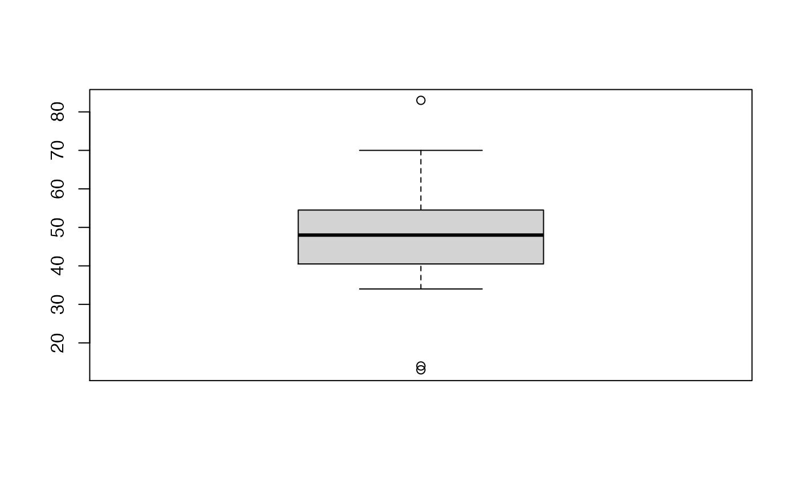
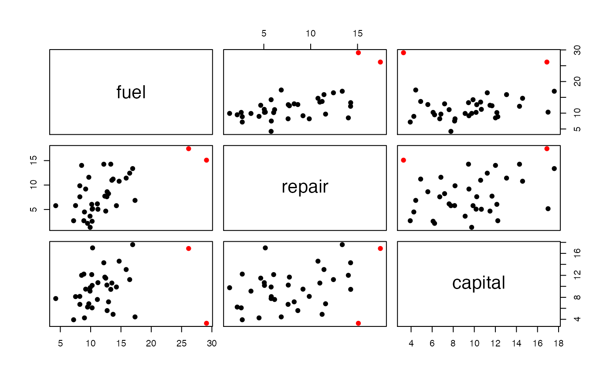
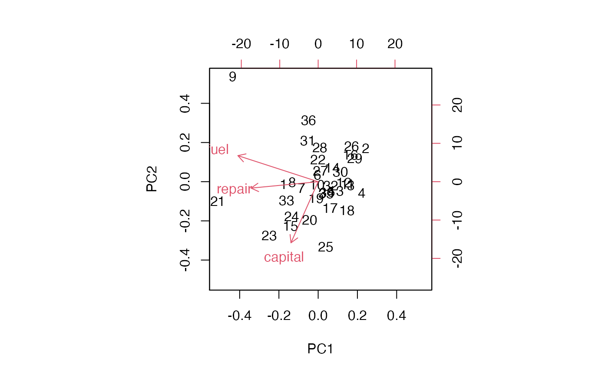
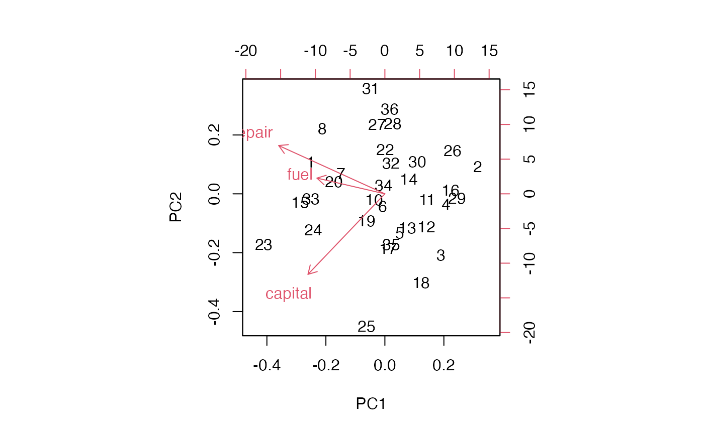

parody.RmdOutliers are data points that seem anomalous. Precise quantitative measurement of anomalousness is easiest when a parametric probability model is adopted. Significant statistical and computational research has been devoted to devising and rationalizing criteria for outlyingness that do not require adoption of a parametric probability model. This package provides interfaces to various methods presented in the literature of statistical methods for measuring outlyingness in univariate and multivariate samples. It is offered as a resource through bioconductor.org because formal testing for outliers is a common concern of genome scale data analysis, in many different contexts.
Davies and Gather (1992) present a detailed study of criteria for outlyingness in univariate samples. Inlier boundaries are defined, with form \((\hat{m}-c(n)\hat{s}, \hat{m} + c(n) \hat{s})\), where \(\hat{m}\) is a location parameter estimate, \(\hat{s}\) is a scale parameter estimate, and \(c(n)\) are multipliers depending on sample size. Candidates for \(m\) are trimmed mean, median, midpoint of shorth; candidates for \(s\) include trimmed standard deviation, median absolute deviation (MAD), length of shorth. The familiar boxplot outlier labeling rules do not fall immediately into this framework, as the left and right inlier boundaries may not be equidistant from the location parameter value.
This package provides functions implementing components of the various labeling rules; users may mix components to define their own procedures.
library(parody)We define a dataset presented in Rosner (1983). The data concern tapping frequencies achieved by children with various exposures to lead.
lead <- c(83, 70, 62, 55, 56, 57, 57, 58, 59, 50, 51,
52, 52, 52, 54, 54, 45, 46, 48,
48, 49, 40, 40, 41, 42, 42, 44,
44, 35, 37, 38, 38, 34, 13, 14)We can use a boxplot to visualize the distribution. This includes an outlier labeling criterion, and the dots beyond the whiskers are declared to be outlying.
boxplot(lead)
The first formal assessment uses the familiar boxplot rules. For this, we need to supply a scaling function as described in the manual page.
calout.detect(lead,alpha=.05,method="boxplot", scaling=
function(n,alpha)1.5)## $ind
## [1] 34 35 1
##
## $val
## [1] 13 14 83
##
## $outlier.region
## [1] 18.16667 76.83333We can see that this agrees with the R visualization.
Theoretical work on the calibration of the boxplot rule is deployed when ftype is set to "ideal". See the manual page for references.
calout.detect(lead,alpha=.05,method="boxplot",ftype="ideal")## Warning in tukeyorinds(x = x, alpha = alpha, g = g): no data values in outlier
## region## $ind
## [1] NA
##
## $val
## [1] NA
##
## $outlier.region
## [1] 7.808079 87.191921Another procedure that does not fit in the Davies and Gather framework is the generalized extreme studentized deviate procedure due to B Rosner. In this procedure, we prespecify the number of possibly outlying points \(k\) (which may be any number less than half the sample size), and the \(k\) most extreme studentized deviates are obtained and recorded from the highest to lowest value. Then repeated `outward testing’ is conducted using analytic critical values that bound the rate of false outlier labeling for the entire testing procedure, whether or not outliers are present.
Here we apply Rosner’s procedure:
calout.detect(lead,alpha=.05,method="GESD",k=5)## $ind
## [1] 1 34 35
##
## $val
## [1] 83 13 14It gives results that agree with the standard boxplot.
Davies and Gather characterize a rule based on median and MAD using scaling functions \(c(n)\) that they associate with Hampel. This procedure uses the scaling function defined in their expression (3).
calout.detect(lead,alpha=.05,method="medmad",scaling=hamp.scale.3)## $ind
## [1] 34 35 1
##
## $val
## [1] 13 14 83
##
## $outlier.region
## [1] 14.92932 81.07068Finally we use the shorth-based detector.
calout.detect(lead,alpha=.05,method="shorth")## Warning in rououtinds(x = x, alpha = alpha, g = g): no data values in outlier
## region## $ind
## [1] NA
##
## $val
## [1] NA
##
## $outlier.region
## [1] 6.215225 94.784775A sample dataset called tcost is supplied with the package. Before visualizing, we compute a default multivariate outlier criterion, due to Caroni and Prescott, that generalizes Rosner’s GESD:
data(tcost)
ostr = mv.calout.detect(tcost)
ostr## $inds
## [1] 21 9
##
## $vals
## fuel repair capital
## 21 26.16 17.44 16.89
## 9 29.11 15.09 3.28
##
## $k
## [1] 17
##
## $alpha
## [1] 0.05We see that indices 9 and 21 are flagged. Let’s create a pairs plot with coloring.

Another display of interest employs principal components:

To get a sense of the robustness (or lack thereof) of the biplot, let us replot after removing the datapoints that were marked as outliers by the Caroni and Prescott procedure.
